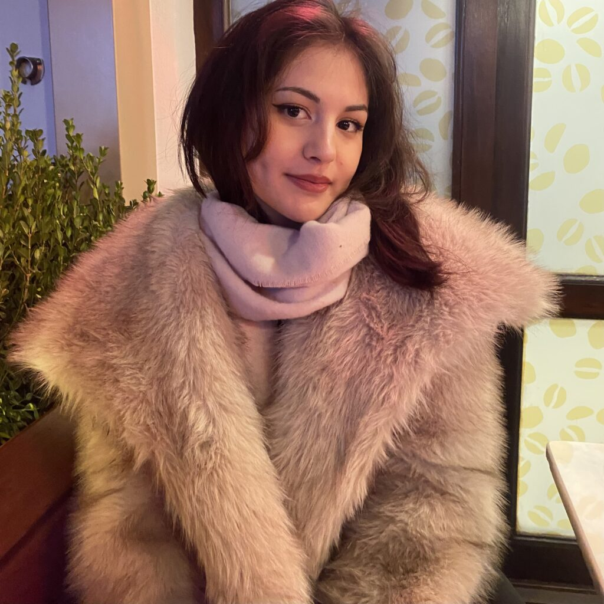

Yazar & Edebi Tahlilci
Kevser Uzdilli
İngiliz Dili ve Edebiyatı Araştırmacısı Söylenti Dergi Düzenli Yazarı
İngiliz Dili & Edebiyatı
Anglo-Amerikan kanonu, modern anlatı teknikleri ve metin analizi.
Söylenti Dergi Akademi
Modernist roman, bilinç akışı ve felsefi edebiyat tahlilleri.
1